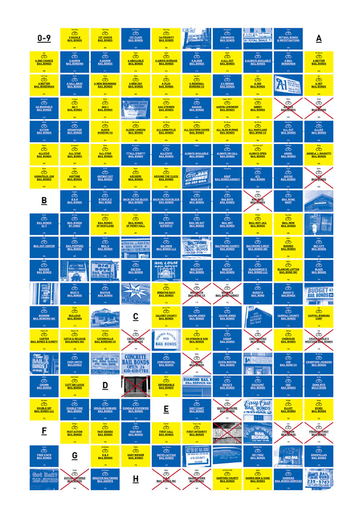
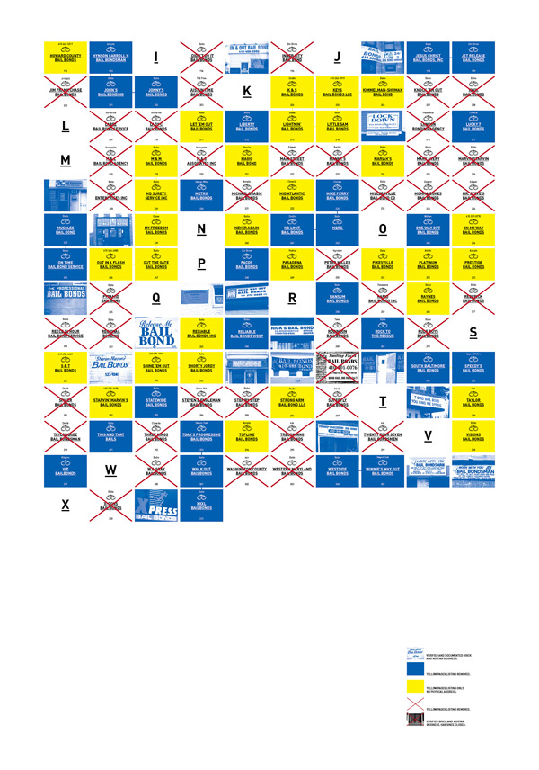

From 0 Hassle to XXL Bail Bonds
This study represents all the bail bond agents listed in Baltimore by name and location.
During my research, I discovered that many bail bonds businesses do not actually have a physical address even though one may be listed. Instead, they are only accessible through the Yellow Pages, and a phone call brings the bond agent directly to your home or the detention center where you are being held.
The format and language conventions of this study is based upon the Baltimore Yellow pages, and each module shows name, location, and whether or not the agency is still in business.
Bail bond businesses are often transient and many that I documented at the beginning of my project have closed or changed location.
There are over 300 bail bond agents listed in this study, which is the highest per capita in the country.
- 
- 